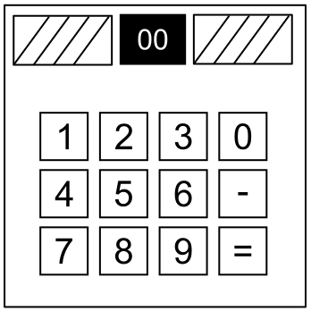

A Respeito da Matemática
Matemática é fácil. Mas será que é fácil quando você tem que responder perguntas inúmeras vezes para impedir uma explosão? Só um jeito de descobrir.
Responda a pergunta. Insira os números com o teclado e aperte '=' para enviar a sua resposta. Use o símbolo de '-' para alternar entre uma resposta positiva ou negativa. Não se exploda!